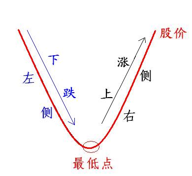
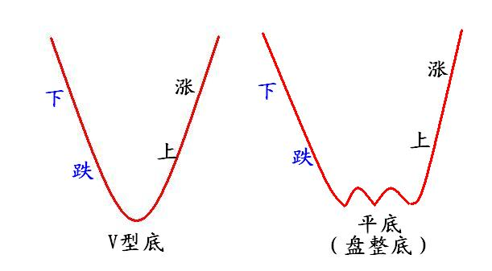

第117篇•教你炒股系列29：左侧挖掘牛股的方法（1）
谷为陵
我在上文中谈到，有两种选牛股的方法：一是左侧挖掘法，二是右侧发现法。所谓左侧与右侧，是指股价短期走势与临近的股价最低点的相对位置而言的——在最低点的左面的股价就是左侧，是股价处于下跌的过程，在最低点的右面的股价就是右侧，是股价处于上涨的过程。如下图所示：

所谓左侧挖掘法，就是在股票股价还处于下跌过程中的时候，就通过分析股票的基本面，主要是分析股票的内在价值，而将未来牛股提前挖掘出来，并且在股价接近最低点的时候买入。左侧挖掘法，说白了，就是抄牛股大底的方法。
左侧挖掘法的好处有二：一是投资者能够提前发现牛股，有足够的时间进行相应的资金和操作准备，这对于大资金尤其重要；二是因投资者的吸货区基本上在股价最低价附近，因此，就能够确保投资者的持仓成本低，而投资收益高——只要股价一上涨就能够获利。确实，左侧挖掘法的好处是显而易见的，要不然哪会有那么多的投资者热衷于抄底呢？
但是，据我观察，在大多数情况下，投资者在抄底的时候往往会被套牢，这又是为什么呢？我认为关键的问题是投资者对于股价底部的认识不清所致。
底部是怎样形成的？从本质上看，底部是由股价趋势由跌转涨而形成的。从股价走势的“事后”结果看，股价确实是按照趋势运行的。所谓趋势，就是股价运动的方向。股价趋势可分为三种：上涨、下跌、水平（或者说盘整）。这三种趋势能够形成底部的组合有两种：下跌——上涨；下跌——水平——上涨，如下图所示：

“下跌——上涨”组合形成的是V型底，“下跌——盘整——上涨” 组合形成的是平底，或者说是盘整底。
趋势有两个最重要的性质：一是方向，二是规模，而它们又是相互关联的,其中最重要的一点是，方向决定规模。如，若趋势在某一个方向上不断发展，则该方向的趋势规模会越来越大；反之，若趋势在某一个方向停止发展并逆转，则该方向的趋势规模也就立即停止。我在前面讲过，从短期来看，上涨波段（注：趋势的一种形式）可以分为4种：随机波段、小波段、中波段和大波段。相应的，下跌波段也可以分为这4种。
若将以上4种下跌波段与4种上涨波段进行“下跌——上涨”组合，那么，理论上可以形成16种类型的V型底。但从抄底的意义上看，我们希望炒的底应该是经过中大波段跌幅后形成的底，那种只经过随机波段和小波段“小跌”的底，不是跌透的“肥底”。
但要注意的是，中大下跌波段与4种上涨波段进行“下跌——上涨”组合，可形成4种V型底，如下表所示：
|
下跌波段
|
上涨波段
|
形成的V型底
|
|
中大波段
|
随机波段
|
随机底
|
|
小波段
|
小底
|
|
中波段
|
中底
|
|
大波段
|
大底
|
可见，当中大下跌波段与中大上涨波段组合后，就可形成中V型底或者大V型底，这两种V型底正是投资者所要抄的理想底部。只要在这两种底部附近买入，紧接着就会赶上股价的一轮中级或者大的上涨行情，能够很快获得暴利。
但是，当中大下跌波段与“随机上涨波段”和“小上涨波段”组合后，就只能形成随机底和小底，这两种底根本称不上是像样的V型底，只能够算是股价“砸出”的一个小坑而已，抄到这样的底后，股价根本涨不高，只是“冒一个泡”就会转头继续下跌，而将抄底者套住。
大多数投资者就是没有搞清以上不同规模或者说不同级别的下跌波段与上涨波段的组合可能出现的全部结果，而是想当然或者侥幸地认为其抄的底应该是一个中期底或者大底。但事实上，在股价下跌过程中，大底只有一个，而小底却有多个，从概率上看，逢底就抄必定会在大多数情况下炒到小底，其结果不是赚点“葱姜钱”，就是套牢割肉。
那么，怎样才能够抄到牛股中期底或者大底，而不是随机底和小底呢？
（未完待续）